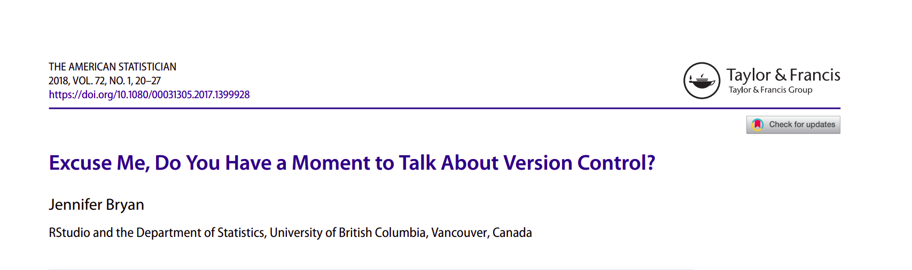
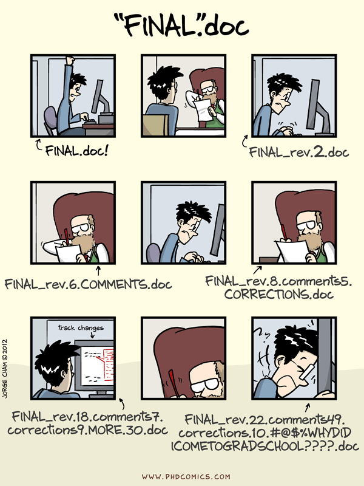
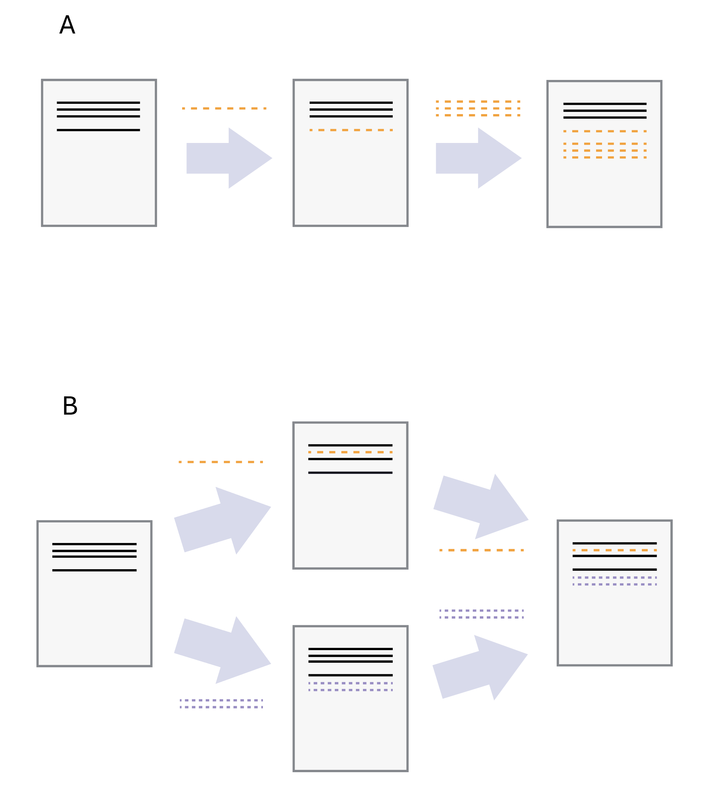
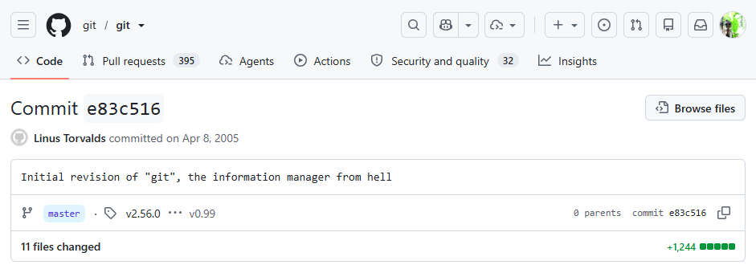
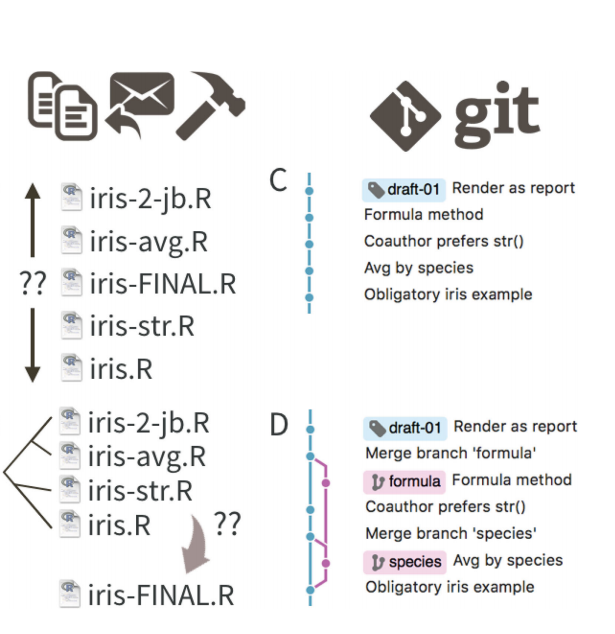
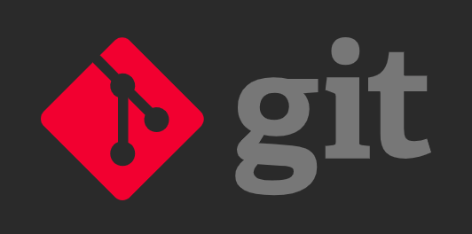
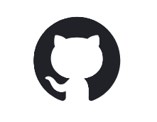

A guide for people who already use Bash, Python, and R
2026-10-17

stage (add), commit, push, pull, clone
(Sources: PhD Comics “Final.doc”, The Carpentries 2025)


The moment when two (or more) coauthors send you their own version of the manuscript with tracked changes and you have to figure out how to combine it all …
???
Git is not a backup folder. It is a timeline of deliberate project snapshots.
Version Control A system for maintaining current and past copies of all of your files and a record of all the changes you have made;
git Version control software for tracking your project on your local computer
GitHub A free, public remote website where your project is permanently hosted
Repository Any collection of files that belong to the same project, plus a few special git files that set up the version control. Also called a repo by hipster programmers.
Clone Create a local copy of a repository from the GitHub website to your own website. You can clone from your own repository or anyone else’s that is posted on GitHub. Once the files are on your local computer you can edit or use them as you like. However, you can only change files on GitHub for the repositories that you yourself created or for projects that you have been invited to collaborate on with others.
Commit (the noun) A snapshot of your file system at a particular time. Since your last commit, it keeps track of the files you currently have, the ones you have deleted or added, and any changes you have made to files. Each commit has a unique identifier (“SHA”)
Commit (the verb) When you commit, you are taking a snapshot of your files at the current time. You must add a summary of the commit that briefly describes what changes you have made (such as “add new homework file”). Note that all commits affect only the local copy of your repository. They do not affect the remote copy that is stored on GitHub
Push Pushing a set of changes means copying them from your local repository up to GitHub.
Pull(=fetch) Pulling means copying the repository in its current state on GitHub down to your local repository. This would incorporate any changes that others have made (and pushed) in a collaborative project.
Git does not care whether the file is Python, R, Bash, Markdown, or a dataset.
Git tracks files and their history. Your Python environment, R packages, and shell are separate concerns that we can record alongside the code (e.g., in R using renv lockfiles or in python using requirements.txt files)
| Place | Meaning | Git command |
|---|---|---|
| Working folder | Your files right now. You can edit, run, and inspect them. | git status , git diff |
| Staging area | A review basket: the exact changes you want in the next snapshot. | git add |
| Repository | The saved timeline of snapshots, called commits. | git commit |


Organizing, recording, and disseminating your work - exposure prevents neglecting these tasks
Structured collaboration and access to powerful tools for asynchronous work
Creating web sites in 60 seconds
Can be turned into citable content (add CITATION.txt file or connect to Zenodo and get a DOI)
Acts as shareable lab notebook for computational work
This step is always very painful. Brace yourself!!
I’ve collated information from multiple sources1 to make it as painless as possible.
You will be able to see and download the setup instructions as a .qmd file from here.
After initializing a folder as a git repository (git init or git clone)
git statusgit add -Agit commit -am "Commit Message"git statusgit pushgit pullgit statusrepeat #1-8
Depends on your aims. Usually:
Track:
Ignore:
commit frequently, push often)pull or fetchmerge the branch into your main branchmainpushpull often to avoid critical errors